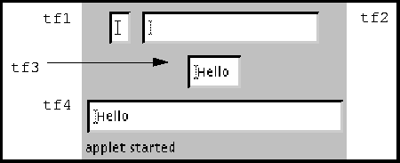

java.lang.Object
|
+----java.awt.Component
|
+----java.awt.TextComponent
|
+----java.awt.TextField
public class TextField
extends TextComponent
A TextField object is a text component that allows for the editing of a single line of text.
For example, the following image depicts a frame with four text fields of varying widths. Two of these text fields display the predefined text "Hello".

Here is the code that produces these four text fields:
TextField tf1, tf2, tf3, tf4;
// a blank text field
tf1 = new TextField();
// blank field of 20 columns
tf2 = new TextField("", 20);
// predefined text displayed
tf3 = new TextField("Hello!");
// predefined text in 30 columns
tf4 = new TextField("Hello", 30);
Every time the user types a key in the text field, AWT sends two action events to the text field. The first one represents the key press and the second one, the key release. Each action event embodies the state of the system at the time that some action occurred. The properties of an action event indicate which key was pressed, what modifier keys were also pressed, and the time at which the event occurred.
Since the event is an instance of ActionEvent, the TextField class's processEvent method examines the event and passes it along to processActionEvent. The latter method redirects the event to any ActionListener objects that have registered an interest in action events generated by this text field.